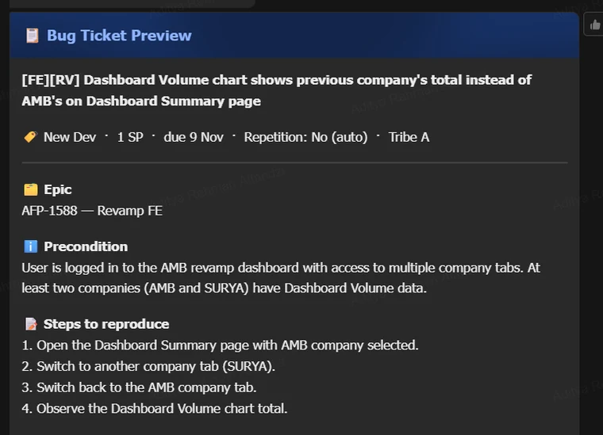

AMB Copilot: a bot that files the ticket, not just the complaint.
Bug reports arrived in chat as free-form notes and left as Jira tickets that a human had retyped. Epics were matched by hand, duplicates slipped through, and the answer to "how does this actually behave?" lived in 217 documents nobody could search. This is the system that took over all three — and the review rules that stopped it from guessing.
Problem
The team worked in Lark. Bug reports were written there, by hand, in whatever shape the moment allowed — a screenshot and a sentence. Turning that into a usable Jira ticket took a QA engineer ten minutes: retype the steps, work out the environment, find the epic, check whether this was the fourth report of the same thing this week.
The cost was not the ten minutes. The cost was that the quality of the ticket depended on who was free. A bad ticket becomes a bad fix, and a duplicate ticket becomes two teams fixing the same defect twice.
Constraints
- No new surface for people to learn. A dashboard nobody opens is a failed product; the work had to happen inside the chat window the team already had.
- Company data cannot leave approved services. Documents stay in the company's own database; the model sees retrieved context, not the corpus.
- Edge Functions only. No long-running server to babysit — 22 separate functions, each with one job.
- The model is not deterministic. Which means every model output needs a rule around it, not a hope.
What I built
One bot at the front, a set of single-purpose functions behind it, and a knowledge layer underneath that both the bot and the developer tools call into.

Ship it where the team already works
/bug and /tanya are slash commands in Lark. No install, no login page, no adoption plan — the tool arrives in the conversation where the bug was reported.
Draft first, file on approval
The bot renders the finished ticket back to the reporter — steps, environment, epic, duplicate candidates — and waits. Nothing reaches Jira until a human confirms it. The bottleneck is a feature: it is the cheapest review step in the whole pipeline.
Rules where rules work, the model where it helps
Epic matching runs through an explicit matching pass with its own fixtures (epic_matching_test.ts) rather than being left to the model's taste. That is the direct cause of the fix shipped this week: "Pilih epic" now resolves to the right epic on the first try, because the match is a covered case and not a lucky completion.
Retrieval that is allowed to say "not found"
Hybrid search over the PRDs — Gemini embeddings for recall, DeepSeek reranking for order — then an answer constrained to the retrieved context, with the source attached. When the documents do not answer the question, the honest output is "not found", and that is the correct answer, not a failure. A confidently invented answer is the defect this system exists to avoid.
Duplicate detection before creation, not after
Recurrence detection runs before the ticket is filed, comparing against bug history and linking repeats back to the original. A duplicate caught here costs one message; caught later it costs a fortnight of two teams on one root cause.
The knowledge base is an API, not a chatbot feature
The same retrieval is exposed as an MCP server, so Claude Code, Kiro and Cursor read the company documents from inside the editor — used by a 25-person team across QA, engineering, product and business development. Per-role tool sets, token verification, and row-level security on every table. Access is auditable, revocable and attributed.
The system also watches itself
An LLM judge scores incoming bug reports for quality, classifies root cause, and rolls a weekly digest. A due-date reminder at 19:00 carries a one-click Ready to UAT status update, so the ticket stays true without anyone opening Jira.
If the tool cannot find the answer, "not found" is the correct answer. That sentence is the whole design. — comment in the answer prompt, which is now the rule for every model decision here
Evidence
Nothing below is an estimate. Every figure was re-derived from the repository on 12 November 2026; the method is in the last column.
| Measure | Value | Method |
|---|---|---|
| Commits | 211 | git rev-list --count HEAD |
| Edge functions | 22 | 24 dirs minus _shared, _tests |
| Unit tests / files | 823 / 30 | Deno.test blocks in supabase/functions/_tests |
| Tickets opened via the bot | 190+ | Jira filter, bot author (reported) |
| Documents indexed | 217 | document table (reported) |
| People with knowledge-base access | 25 | MCP users, recorded (reported) |
Result
The bot is the default way bugs enter Jira on this team: 190+ tickets created through it. The same infrastructure now also drafts test cases to the team's own title standard, converts SA tickets into Jira stories on a daily 08:30 sync, reviews QA knowledge notes through an approval flow, and answers product questions with a citation or an honest refusal.
What I would do differently
- Build the retrieval evaluation set first. Reranker quality is currently argued from examples. A frozen set of question/answer pairs with hit-rate and MRR would turn "it feels better" into a number I can defend in a review.
- Track cost per answer from day one. Embeddings plus rerank plus a completion has a price per query, and I cannot quote it today.
- Test the epic matcher with the messy cases, not the tidy ones. The bug this week lived in an alias nobody thought to write a fixture for. The next fixture set starts from the corrections users actually made.